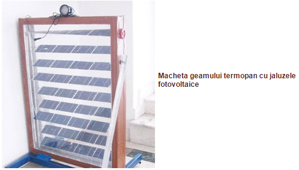
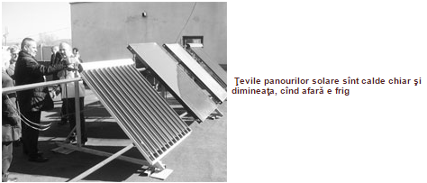
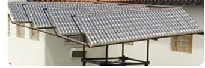

Obiectivul acestui departament este acela de a realiza produse eficiente energetic, perfect ecologice, la preturi relativ scazute folosind tehnologii emergente, know-how de ultima ora. Acest departament dispune de un personal extrem de competent, compus din domnul profesor ri universitari de inalta tinuta tehnica si stiintifica, cu o vasta experienta in domeniul cercetarii stiintifice alaturi de studentii dumnealui.
Laboratorul a fost creat pe baza unui proiect European de cercetare obtinut in urma unui brevet de inventive, transformandu-se astfel intr-un centru de cercetare.
In fiecare an s-au prezentat prototipuri in acest laborator:
Panou fotovoltaic in geam termopan
Aceasta inventie transforma geamurile termopan in sisteme fotovoltaice de generare a electricitatii fara sa fie afectata capacitatea de patrundere a luminii in incaperi.

Panou fotovoltaic in geam termopan.
„Aceste geamuri pot produce energia electrică pentru iluminatul unui apartament. Am gîndit acest sistem pentru că nu a mai fost realizat, dar există şi varianta montării lamelelor ca jaluzele în exterior, chiar cu o lăţime mai mare decît cea din termopan“. (Curierul zilei,Arges)
„Nu era prototip, ca şi cealaltă, panou hibrid fotovoltaic – termosolar, ci doar o machetă, pentru că mi-ar mai fi trebuit nişte lamele mai înguste din China, cat să încapă în termopan, dar ceea ce aveam funcţiona. Am avut un bec care a stat aprins tot timpul, mulţi se uitau de unde - că geamul funcţionează şi cu lumina din interior. Era un bec de 24 V, instalaţia avînd o putere de 50 W. În soare puternic, intensitatea ar creşte şi s-ar putea chiar arde becul. Notele în comisie se dau şi pentru funcţionalitate, pe lîngă noutate şi aplicabilitate. Nu ştiu cînd ne-au evaluat şi, tocmai strîngeam, cînd am auzit la difuzor că trebuie să ne prezentăm să luăm premiile“, povesteşte inventatorul trecut pe brevetul OSIM - principala lui satisfacţie. „Cu aceste invenţii nu se fac bani la noi. Mai mult dăm idei la străini, dar aşa este în toată lumea. Noi sîntem profesori şi venim cu idei. Cine e în stare să le ia, să le ia“, mai spune Cicerone Marinescu. (Curierul Zilei,Arges).
Panou hybrid termosolar-fotovoltaic

Panou hybrid termosolar-fotovoltaic.
„Panourile fotovoltaice se încing şi, de la 40 grade în sus, le scade randamentul, de aceea sistemul preia acea căldură, producand în acelaşi timp energie termică şi răcind panoul“. (Curierul zilei,Arges).
Panou solar din materiale reciclabile

Panou solar din material reciclabile.